00读前一分钟 · 全文脉络（做完题再看也行）
📌 结构套路：引出对方做法（①）→ 让步认事实（②）→ However 亮观点（③）→ 承认难处、提出要求（④）→ 两个例子作证（⑤⑥）→ 号召（⑦）——标准的驳论式评论。五题一段一题：26①、27②③、28⑤、29⑥⑦、30 全文。
📌 本篇最值钱的一条规律：让步段里作者「认」的是事实，不是评价。②段用 unarguable 和 equally true 认了两件事实（耗能大、数据中心多），可一个评价词都没给——没说后果严重，也没说担心多余。所以 27A（grave consequences）把事实升级成了评价，27B（groundless worries）干脆否认了事实，两个都错；作者的评价只在 However 之后：代价、花得值、最终保护未来 ⟹ 27D justifiable、30C inevitable。⟹ 新立 R321。
📌 和 2025 T1 比一比：T1 是零作者观点的研究报道，靠说话人的引语推进，坑在「哪一组」；T2 是作者第一人称亮观点的评论，坑在「哪一句是作者的评价」。T1 问「研究想测什么」，T2 问「例子想证明什么」——两篇都在考读出一段话的功能。
01原文精读
🟡 黄色高亮 = 重难点词/短语，点击右侧出卡片 ｜ 蓝色虚线 = 长难句，点击跳到精析 ｜ 每段「意」= 段落意译 ｜ 选中任意其他单词浮出「查有道」 ｜ 原文由你的浏览器从原卷识别成文字（首次约 3 秒，之后秒开）；「原卷对照」可逐句看扫描原图、改识别错字
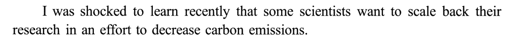
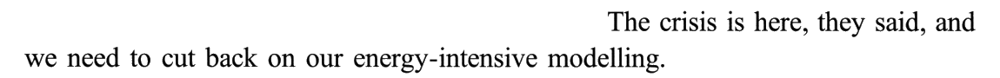
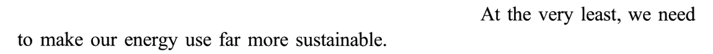
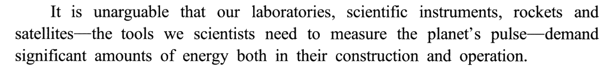
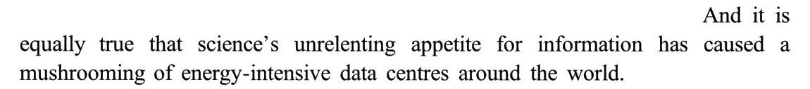
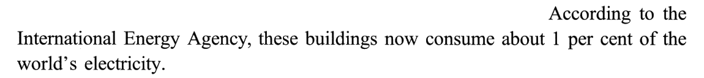
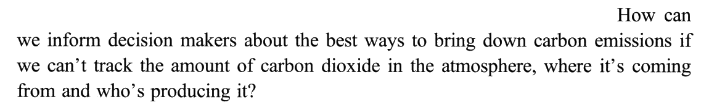
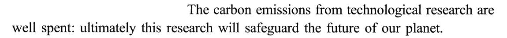
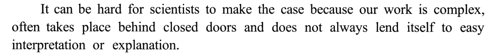
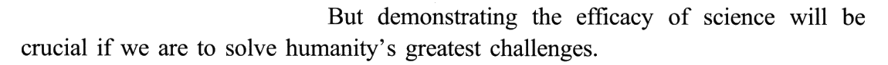
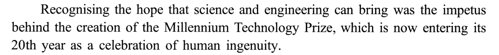
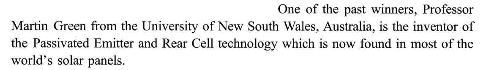
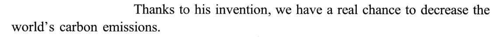
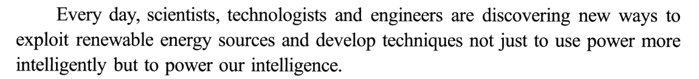
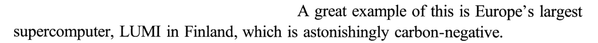
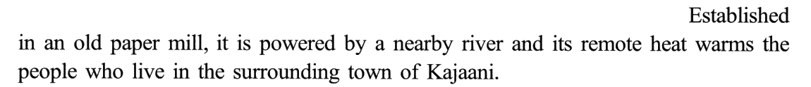
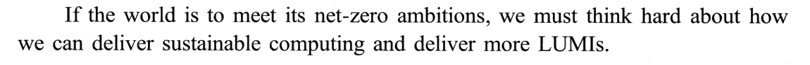
02题目与解析（点选项即判 · 再看解析）
事实细节26. The author expressed great surprise at some scientists’ ______.
干扰项：①❶ 这句其实有两个信息点——「缩减研究」是手段，in an effort to decrease carbon emissions 是目的。作者吃惊的是手段，不是目的。A 把目的读反了：这些科学家不是不愿减排，而是太愿意减排，愿意到连研究都肯砍。C 与①❸ 也反：他们主张让用能更可持续，哪来的怀疑。D 把①❷❸ 他们自己说的「耗能的建模」「让用能更可持续」，改写成了「浪费电」——一来主体错了（那是那些科学家对自己工作的看法，不是作者在指责他们），二来原文只说耗能多，没说浪费；作者到③段还说这些耗能「花得值」。
技巧：首段「I was shocked / surprised to learn that …」是评论文最常见的开头：作者吃惊的东西，就是他后文要驳的东西。这类题先把 that 从句切成「手段」和「目的」两半，再看题干问的是哪一半。
📕 与书解析的商榷：无分歧。书在「技巧总结」里也提到：不认识 scale back，可以从名词 scale「规模」推出「缩减规模」，或者借①❷❸ 两句的具体说法反推。
作者观点27. The author believes that carbon emissions from research ______.
干扰项：A 和 B 都在②段的让步上做手脚，方向正好相反。A 把作者承认的事实（耗能多、数据中心多、用掉 1% 的电）升级成了评价「造成了严重后果」——作者从没说过后果，一个评价词都没给。B 反过来否认了事实：groundless（毫无根据）和 unarguable、equally true 正面冲突——作者不同意那些科学家的结论（缩减研究），但承认他们的担忧有事实依据。C 拿④❶ It can be hard for scientists to make the case 偷换：hard 难的是「为自己辩护」，不是「处理排放」；④❷ 的 greatest challenges 也是泛指气候一类大难题，不是指科研排放。
技巧：作者观点题遇到「先认后转」，把定位段分成两层：让步层只装事实，观点层才有评价。选项若是给让步层的事实加评价（升级）或去事实（否认），都是错的；正确项只取 However 之后的评价 ⟹ 新立 R321；判断哪边是作者的声音，参见 R87。
📕 与书解析的商榷：无分歧，书的「解题捷径」正是这条：真实观点在「让步」之后由「转折」引出，It is unarguable … And it is equally true … However, this is a price … 三个词就定了位。
例证目的28. The example of Green in Paragraph 5 is used to illustrate ______.
干扰项：D 是本题最像的一项，料来自⑤❶ a celebration of human ingenuity。但那是在介绍奖项是什么（颂扬创造力），不是格林这个例子要证明什么；而且 celebration 是「颂扬已有的创造力」，fostering 是「培养创造力」，原文没有「培养」这层意思。A 只停在例子表面：格林的确是位成就卓著的科学家，但作者讲他不是为了表彰个人，而是为了说明他的发明带来了什么。B 的料在⑤❸ decrease the world’s carbon emissions，但原文的语气是 a real chance（希望），不是「必须赶快」（紧迫）。
技巧：例证题的答案在例子服务的那句论点里（R41）；本篇论点在段首、落点在段尾，例子夹在中间——段首的 hope 与段尾的 real chance 首尾呼应，正确项要同时对上这两头。凡是只对上例子中间某个细节（A 的成就、D 的奖项定位）的，都是素材，不是目的。
⚠️ 若盲做，这题会在 C／D 之间犹豫：D 的 human ingenuity 是原词，看着更「有出处」。判据有两条：① 它出自奖项的同位说明，不是格林例子的落点；② foster 原文无据。
📕 与书解析的商榷：无分歧。补一条背景（见 00）：本文作者就是颁发千禧年技术奖的芬兰技术科学院主席——拿自家的奖和自家的得主当证据，目的当然是证明「科研值得」，而不是泛泛地赞美创造力。
事实概括29. It can be learned from the last two paragraphs that LUMI ______.
干扰项：B 拿 energy、power、remote heat 这些碎片拼出一个「能源短缺」——文中一字未提短缺，讲的是碳排放。C 因果颠倒：⑦ 说的是「要实现净零目标，就得有更多 LUMI」——LUMI 是实现净零的手段；C 写成「LUMI 很大程度上归功于净零倡议」，把净零变成了 LUMI 的原因。D 篡改⑥❶ 的 to power our intelligence：原文是「用电驱动我们的智慧」（让计算为人类的智力服务），D 写成「探索智能的力量」，power 从动词变成了名词、意思全变；何况⑥❶ 说的是所有科学家的努力方向，不是 LUMI 的目标。
技巧：「It can be learned from the last two paragraphs」型概括题，先把两段里所有关于题干对象的信息列成清单，提一个共性；选项里与共性无关的（D）先排，再查剩下的有没有无中生有（B）和因果颠倒（C）。遇到 owe … to、result from、be due to 这类因果短语，一定回原文看箭头方向。
📕 与书解析的商榷：无分歧。
全文观点30. Which of the following statements would the author agree with?
干扰项：A 的两半都有问题：「无排放建模」糅的是①❷ 别的科学家想削减的 energy-intensive modelling 和⑦ 的净零目标，「需要额外资金」全文一个字没提——无中生有。B 糅了⑥❷ supercomputer 和⑦ 的 meet（meet … ambitions 是「实现目标」），拼成「超算的需求难以满足」，文中没有。D「研究者的目标应当切合实际」——全文从没讨论过谁的目标高不高、实不实际；作者不满那些科学家，是因为他们方向错了（为减排砍研究），不是因为目标太高。
技巧：Which … would the author agree with 一类题，正确项往往就是全文主线换个说法（R25）：本篇主线 ＝「科研耗能是必须付、也值得付的代价」，27 题取了「值得」（justifiable），30 题取了「必须」（inevitable）——同一句 a price we must pay 被命题人拆成了两道题（R321）。
📕 与书解析的商榷：书排 D 时绕了一圈——从首段反推「作者震惊不是因为目标不切实际」，再到末段「净零是全人类的目标且有实现条件」。其实更省力的判据是：「目标是否现实」这个维度在全文根本没出现过，按无中生有直接排除即可。
03长难句精析（正文蓝色虚线句）
- 主干：
It is unarguable that …——it 是形式主语，真正的主语是 that 从句。 - that 从句的主语很长：
our laboratories, scientific instruments, rockets and satellites，四个名词并列；接着两个破折号夹一个同位语：the tools we scientists need to …（tools 后省略了 that）。 - 破折号收住之后才是谓语
demand significant amounts of energy——⚠️ 主语和谓语被插入语隔开了十来个词，读到 demand 要回头找主语。demand 的主语是物，意思是「需要、消耗」，不是「要求」。 - 句尾
both in their construction and operation：在建造和运行两个环节都耗能。
- 结构同上一句：
And it is equally true that …——形式主语 ＋ that 从句。And ＋ equally 告诉你：这是第二次让步，和❶ 并列。 - that 从句主干：
science’s unrelenting appetite是主语，谓语has caused，宾语a mushrooming of后接 energy-intensive data centres。 - 两个比喻：appetite（科学像个永远吃不饱的人）· mushrooming（数据中心像雨后蘑菇一样冒出来）。比喻生动，可都是在陈述事实，没有一个评价词 ⟹ 27 题 A、B 的判据。
- 反问句：
How can we inform decision makers …?——不是真在问，意思是「不可能告诉决策者」。读反问句，直接把它翻成否定陈述。 about the best ways to bring down carbon emissions：inform sb about sth，to bring down 作 ways 的定语。- 条件从句
if we can’t track的宾语是 the amount of carbon dioxide，后面又挂两个并列的 wh- 从句：where it’s coming from和who’s producing it——追踪三件事：多少、从哪来、谁排的。 - 这一句是作者的理由：要减排，先得测得到；测，就得做耗能的研究 ⟹ 代价必须付。
- 冒号把句子分成判断 ＋ 理由两半：前半
The carbon emissions … are well spent，后半ultimately this research will safeguard …。 well spent：spend 本来说钱和时间，这里说碳排放——把排放当成一笔开支，「这钱花得值」。和③❶ a price we must pay 是同一个记账比喻。- ultimately 对应 27 题 D 的 in the long run，the future of our planet 对应「长远」——冒号后面就是 27 题的答案。
- 主干：
It can be hard for scientists to make the case——it 形式主语，真主语是 for … to do 不定式。 - because 从句里，一个主语
our work带三个并列谓语：is complex · often takes place behind closed doors · does not always lend itself to …，用逗号和 and 连接——三个理由。 lend itself to：「适合于……」，to 是介词，后接名词 easy interpretation or explanation。- ⚠️ hard 修饰的是 make the case（为自己辩护），27 题 C 把它挪成了「排放难以处理」。
- 主干：
demonstrating the efficacy of science will be crucial——动名词短语作主语，谓语是 will be crucial。 if we are to solve …：be to do 用在 if 从句里，意思是「如果我们想要做到……」，表目的和条件。⑦ 末句又用了一次（If the world is to meet …）——首尾呼应。- But 开头承接❶：难辩护（❶）——但必须证明（❷）。这一句给⑤⑥ 两段的例子定了任务：下面的例子都是在「证明科学有用」（⟹ 28 题）。
- 主干：
Recognising the hope … was the impetus behind the creation of …——动名词短语作主语，系动词 was，表语 the impetus。 - 主语内部：
the hope that science and engineering can bring——that 引导定语从句（bring 的宾语就是 hope），不是同位语从句。判断方法：从句里缺宾语 ⟹ 定语从句。 - 句尾
which is now entering its 20th year：非限制性定语从句修饰 the Prize；as a celebration of human ingenuity再说明这个奖的身份——⚠️ 这是奖项的介绍，28 题 D 就借它造干扰。 - 读法：倒过来更顺——「设立千禧年技术奖的动因，是认识到科学与工程能带来希望」。
- 主干：
One of the past winners … is the inventor of …——主语后面紧跟同位语 Professor Martin Green 和他的单位，读到 is 才是谓语。 the Passivated Emitter and Rear Cell technology：专有名词，考场上不必懂，认出「一种太阳能电池技术」就够了。- 句尾
which is now found in most of the world’s solar panels：定语从句修饰 technology——这个「如今到处在用」是例子的分量所在。
- 主干：主语是三类人（scientists, technologists and engineers），谓语
are discovering new ways to，后面两个并列不定式：exploit renewable energy sources 和 develop techniques。 - techniques 后接 not just … but …：
not just to use power more intelligently，but to power our intelligence——重心在 but 之后。 - ⭐ 同词异性的对仗：前一个 power 是名词「电」，后一个是动词「驱动」；intelligently 与 intelligence 镜像对称。翻成中文就是「不只是更聪明地用电，更要用电驱动智慧」。29 题 D 就是把这个动词 power 偷换成了名词「力量」。
- 句首
Established in an old paper mill：过去分词短语作状语，逻辑主语是主句的 it（＝LUMI），表被动——「（LUMI）建在一座旧造纸厂里」。 - 主句两个并列分句，and 连接：①
it is powered by a nearby river（被动，由河流——水电——供能）；②its remote heat warms the people。 - people 后接定语从句
who live in the surrounding town of Kajaani。 - 三个细节（旧厂房、水电、余热供暖）是同一件事的三个侧面：可持续 ⟹ 29 题 A。
- 条件从句
If the world is to meet its net-zero ambitions：又是 if … be to do（如果想要实现……），与④❷ 呼应。 - 主句
we must think hard about how …，how 从句里一个主语带两个并列谓语：deliver sustainable computing 和 deliver more LUMIs——deliver 重复两次，是号召式收尾的节奏。 - 因果方向：净零是目标，更多 LUMI 是手段（「要想达成 A，就得做 B」）。29 题 C 的 owes much to 把方向倒了过来。
- LUMIs：专有名词加 -s 变成普通名词——「像 LUMI 这样的设施」。
04词汇复盘（点卡片看详情）
05可搬进作文/翻译的素材
本篇话题——科技与环保、发展的代价、可持续发展——正对大作文里的「科技利弊」「发展与环境」「绿色生活」类题目；「先承认、再转折」的论证骨架则是任何议论文都用得上的。英文例句都是按原文句式自拟的，只借骨架。